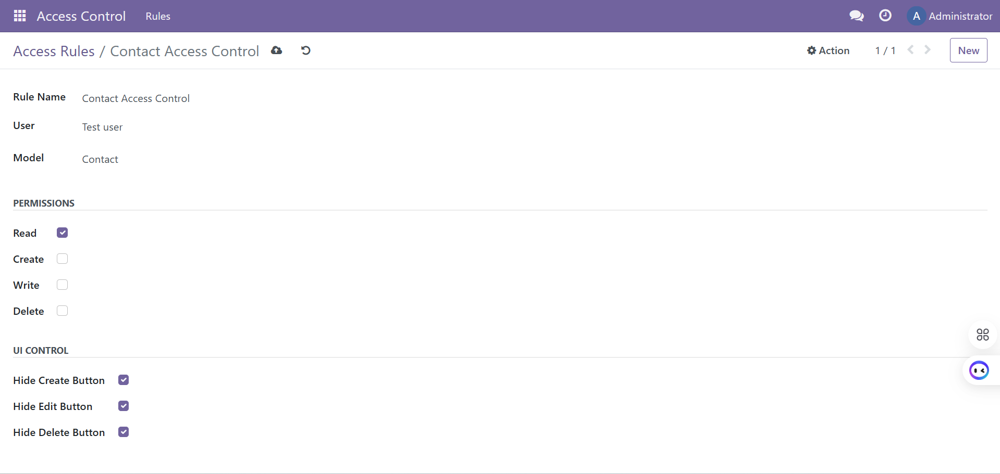
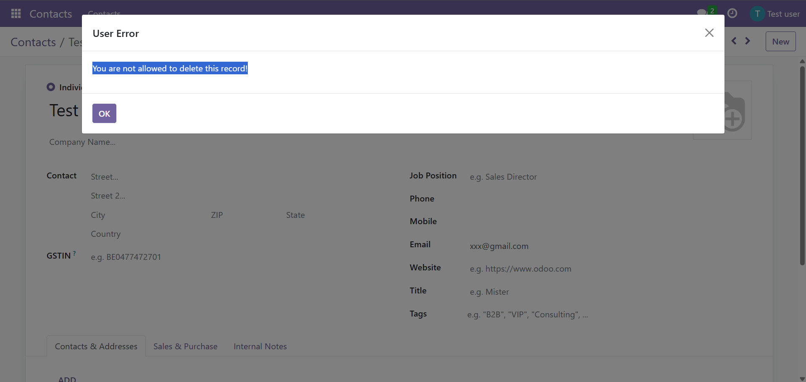

Easy Access Control
Control who can create, edit, or delete records in Odoo easily and safely.
Control who can create, edit, or delete records in Odoo easily and safely.





Works on Odoo.sh and On-Premise environments.
Not supported on Odoo Online.
Protect your Odoo data with easy access control.